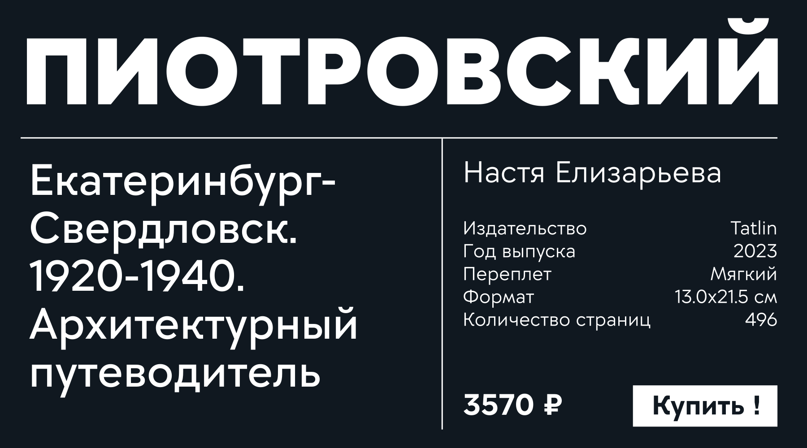
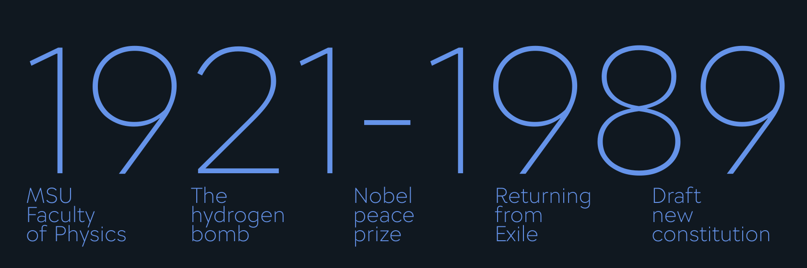
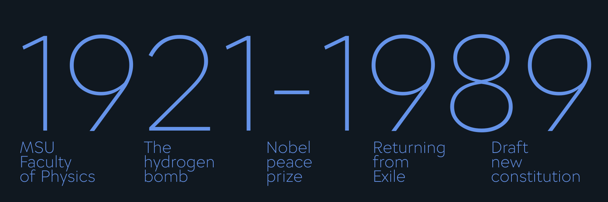
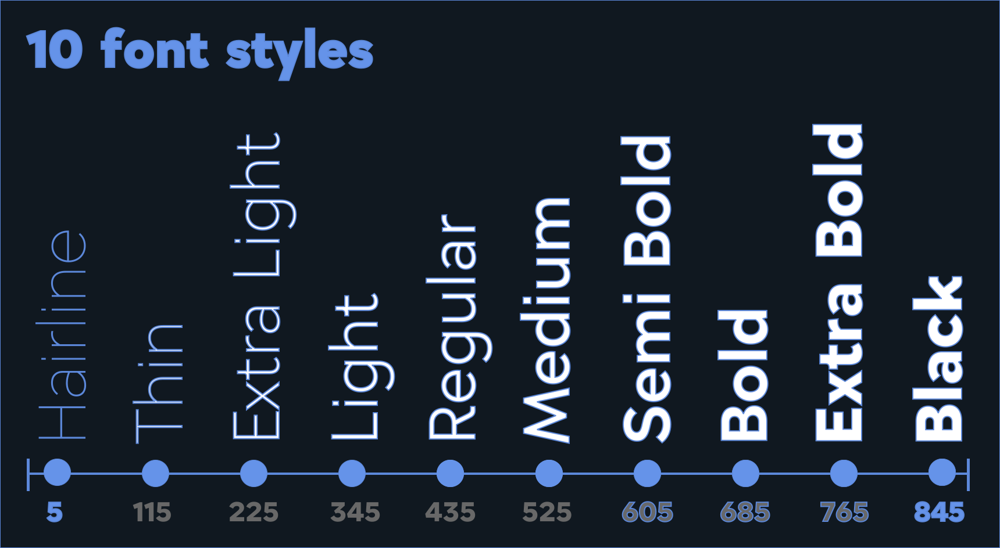
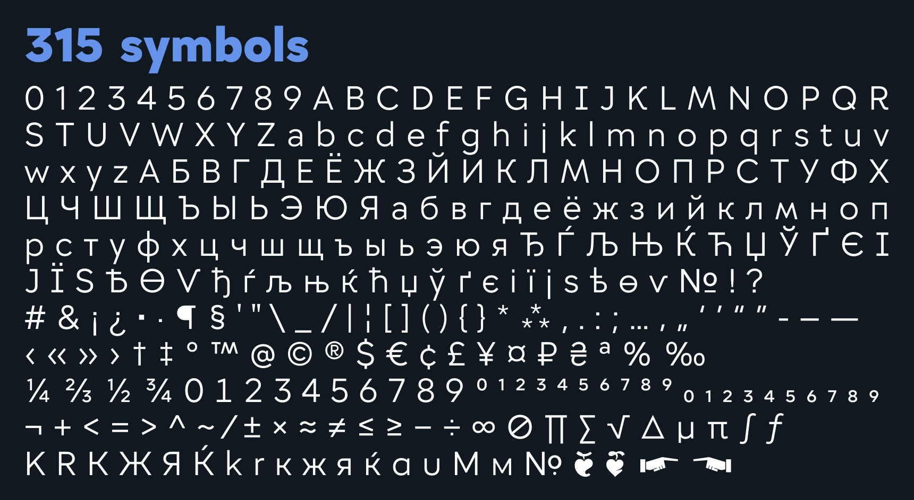
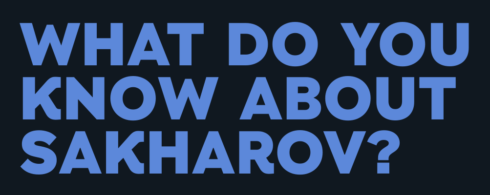
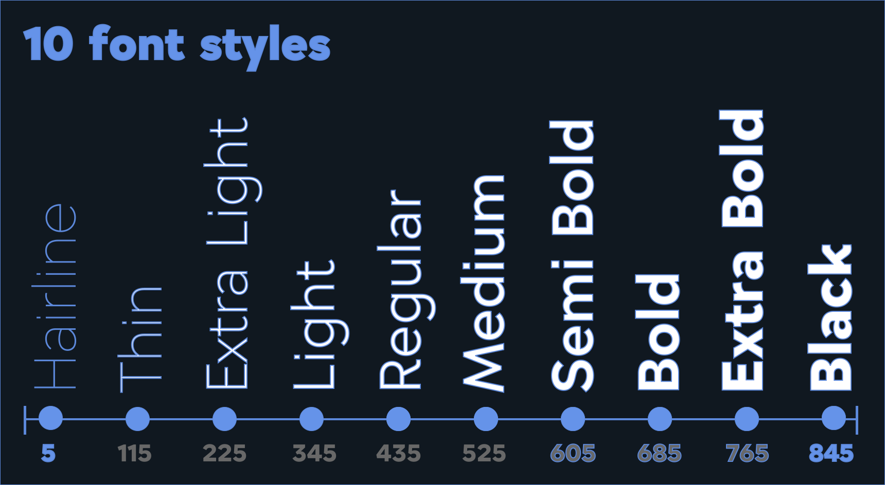
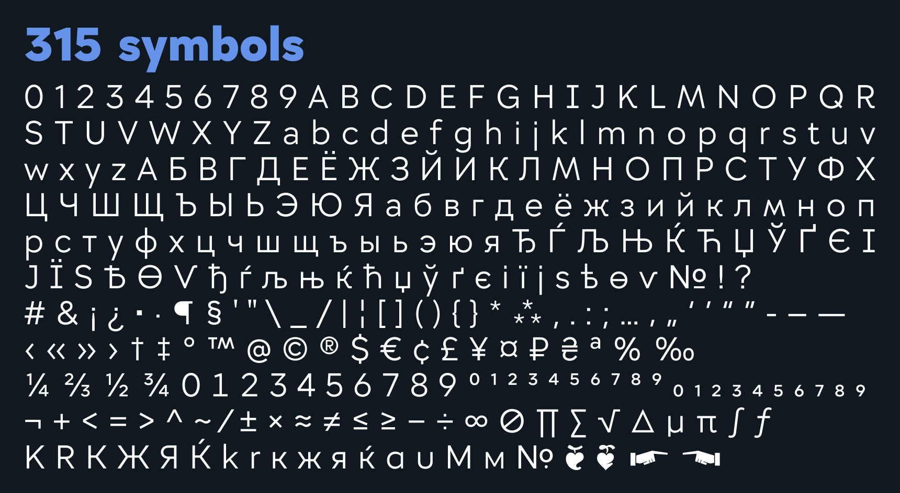

NT Sakharov
О Шрифте
NT Sakharov – геометрический гротеск, разработанный для МАОУ СОШ №200. Шрифт назван в честь советского учёного, политика и правозащитника – Андрея Сахарова. Шрифт также доступен для использования некоммерческими и государственными образовательными организациями и фондами. NT Sakharov содержит множество стилистических альтернатив, поддерживает базовые латиницу и кириллицу, основные математические символы и дроби.
Овервью

 






Стилистические
альтернативы


Поддерживаемые
языки
Abaza, Afar, Alekano, Amahuaca, Amarakaeri, Amis, Andaandi, Dongolawi, Ao Naga, Ashaninka, Asu (Tanzania), Batak Dairi, Batak Karo, Batak Mandailing, Batak Simalungun, Batak Toba, Belarusian, Bemba (Zambia), Bena (Tanzania), Bikol, Bislama, Borana,Arsi,Guji Oromo, Buginese, Candoshi,Shapra, Cebuano, Chiga, Chokwe, Congo Swahili, Crimean Tatar, Eastern Arrernte, Eastern Oromo, Erzya, Fijian, Gilbertese, Gusii, Hani, Hiligaynon, Huastec, Indonesian, Ixcatlan Mazatec, Jamaican Creole English, Japanese, K’iche’, Kalaallisut, Kalenjin, Karachay,Balkar, Kekchi, Kenzi, Mattokki, Kimbundu, Kinyarwanda, Kituba (DRC), Kongo, Kuanyama, Kumyk, Ladino, Luba,Lulua, Luo (Kenya and Tanzania), Macedonian, Makhuwa,Meetto, Makonde, Makwe, Malaysian, Maore Comorian, Mauritian Creole, Minangkabau, Moksha, Murrinh,Patha, Mwani, Naga Pidgin, Ndonga, Ngazidja Comorian, Nobiin, Nogai, North Ndebele, Northern Qiandong Miao, Northern Uzbek, Nyankole, Orma, Paluan, Pampanga, Pintupi,Luritja, Pohnpeian, Rotokas, Rundi, Russian, Rusyn, Rwa, Samburu, Scots, Sena, Seselwa Creole French, Shambala, Shawnee, Shipibo,Conibo, Shona, Soga, Somali, Soninke, South Ndebele, Southern Qiandong Miao, Standard Malay, Swahili, Swati, Taita, Tedim Chin, Tok Pisin, Tsonga, Tumbuka, Tzeltal, Tzotzil, Ukrainian, Upper Guinea Crioulo, Wangaaybuwan
96px
MSU Faculty of Physics
54px
What do you know about Sakharov?
32px
§§. Воспрещается жить на даче сумасшедшим, безумным, страдающим заразными болезнями, престарелым, малолетним и находящимся в строю нижним чинам, ибо нигде нет столько опасности сочетаться законным браком, как на чистом воздухе.
120px
Nobel prize
20px
Андрей Дмитриевич Сахаров (21 мая 1921, Москва — 14 декабря 1989, Москва) — советский физик-теоретик, академик АН СССР, общественный деятель, диссидент и правозащитник. Один из создателей первой советской водородной бомбы. Народный депутат СССР, автор проекта конституции Союза Советских Республик Европы и Азии. Лауреат Нобелевской премии мира за 1975 год. После заявлений, осуждающих ввод советских войск в Афганистан, был лишён всех советских наград и премий и в январе 1980 года выслан из Москвы, его жена Елена Боннэр добровольно выехала с ним. В конце 1986 года генеральный секретарь ЦК КПСС М. С. Горбачёв разрешил им вернуться из ссылки в Москву.
20px
Andrei Dmitrievich Sakharov (May 21, 1921, Moscow — December 14, 1989, Moscow) was a Soviet theoretical physicist, academician of the USSR Academy of Sciences, public figure, dissident and human rights activist. One of the creators of the first Soviet hydrogen bomb. People’s Deputy of the USSR, author of the draft constitution of the Union of Soviet Republics of Europe and Asia. Winner of the Nobel Peace Prize in 1975 After statements condemning the entry of Soviet troops into Afghanistan, he was stripped of all Soviet awards and prizes and expelled from Moscow in January 1980, his wife Elena Bonner voluntarily left with him.